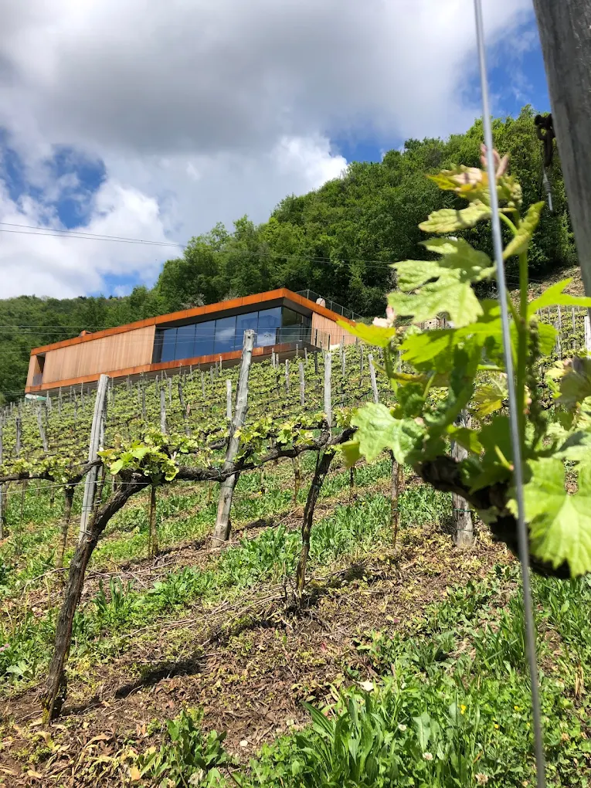
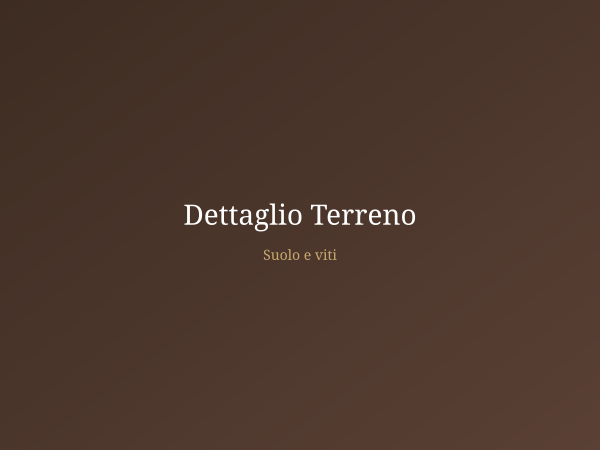

La Terra
Il suolo, il clima e l'esposizione solare che rendono unici i nostri vini.
Cenate Sopra,
ai Piedi del Monte Misma
Il territorio di Cenate Sopra rappresenta uno dei microclimi più interessanti della provincia bergamasca. A 400 metri di altitudine, il vigneto gode di un'esposizione ottimale al sole, con escursioni termiche giorno/notte che favoriscono lo sviluppo di profumi complessi e un'acidità naturale ben bilanciata.
Sul Monte Misma, a 800 metri di quota, si erge l'antico santuario di S. Maria Assunta. I boschi che circondano il vigneto creano un ecosistema naturale che protegge le viti e arricchisce la biodiversità del territorio.


Un Suolo Ricco di Storia
Le caratteristiche geologiche del territorio conferiscono ai nostri vini una mineralità e una complessità uniche.
Suolo Minerale
Terreni ricchi di minerali e argilla che donano struttura e longevità ai nostri vini rossi.
Esposizione Solare
L'orientamento sud/est garantisce una maturazione ottimale delle uve con accumulo zuccherino equilibrato.
Drenaggio Naturale
Il declivio collinare favorisce il naturale drenaggio delle acque evitando i ristagni dannosi per le radici.
Escursione Termica
Le differenze di temperatura tra giorno e notte preservano l'acidità naturale e i profumi delle uve.
La qualità del vino nasce prima di tutto dalla terra. Ogni sorso racconta la storia del suolo, del clima e delle mani che lo hanno curato.
— Famiglia Nembrini/Micheli
Le Varietà che Coltiviamo
Petit Verdot
Vitigno di origine bordolese, produce vini di grande struttura con note speziate e fruttate.
Merlot
Versatile e morbido, regala vini eleganti con tannini setosi e sentori di frutta rossa.
Cabernet Sauvignon
Il re dei vitigni internazionali, strutturato e longevo con carattere deciso e persistente.
Uve selezionate da Rosato
Selezione di uve per il nostro AMNIS, vinificate in rosa per un vino fresco e profumato.
Vieni a Toccare la Nostra Terra
La visita al vigneto è parte integrante della nostra esperienza di degustazione.